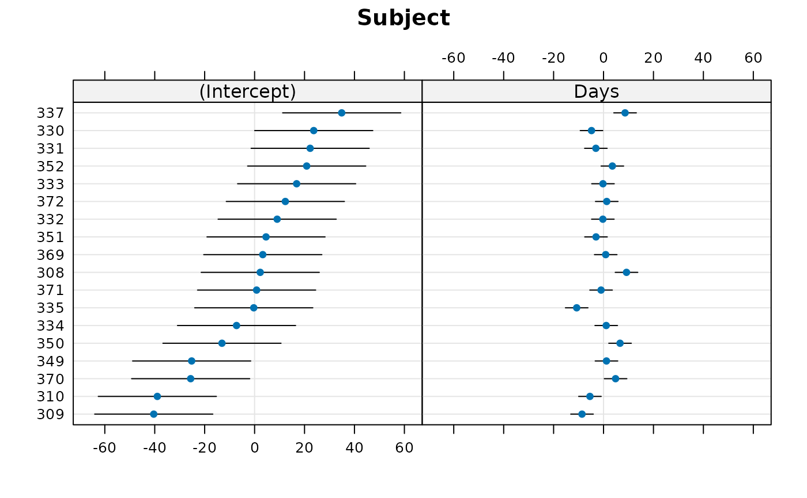
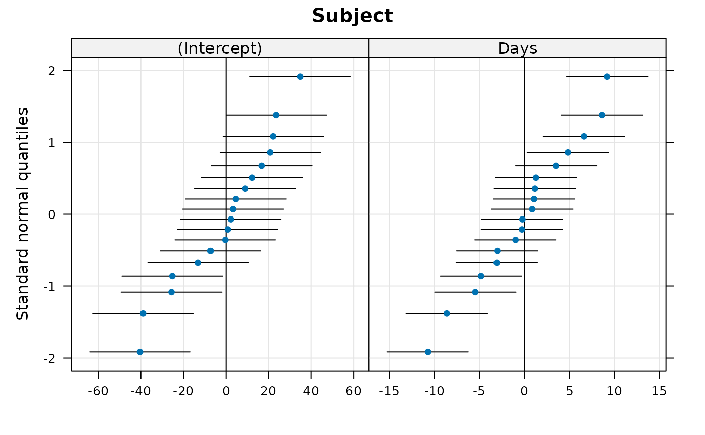
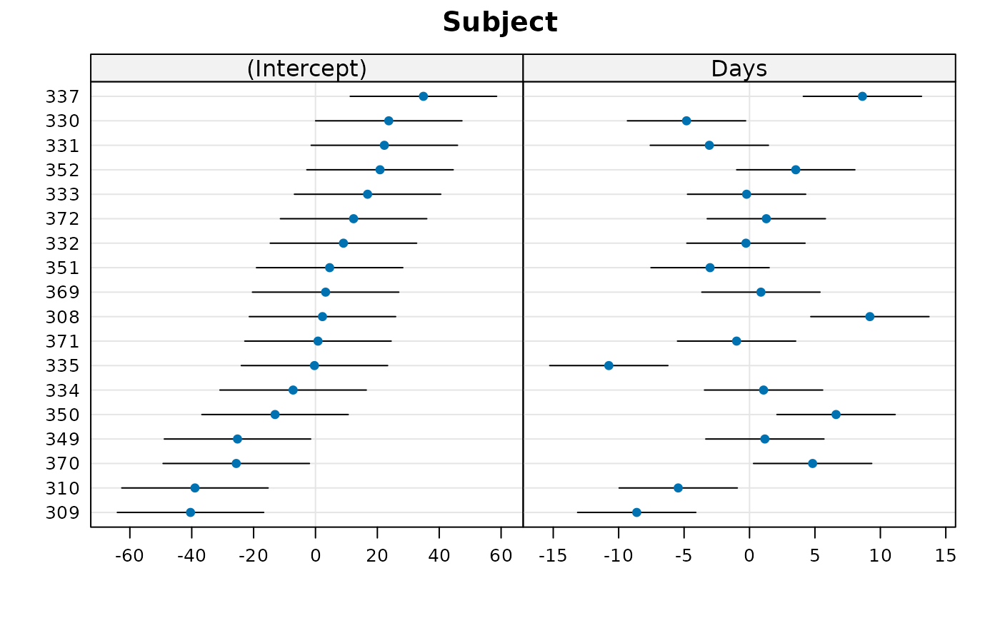
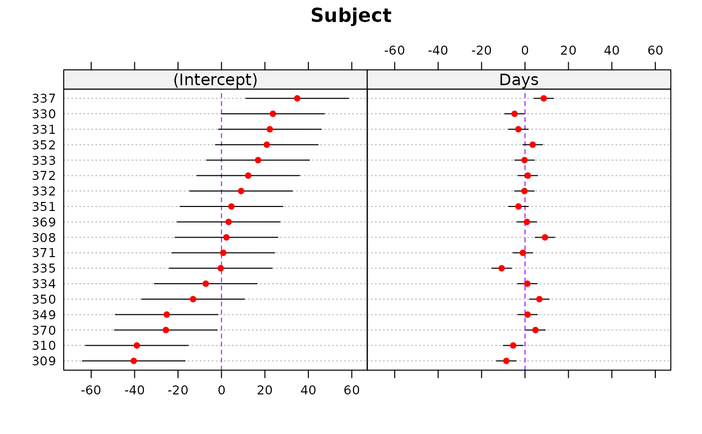
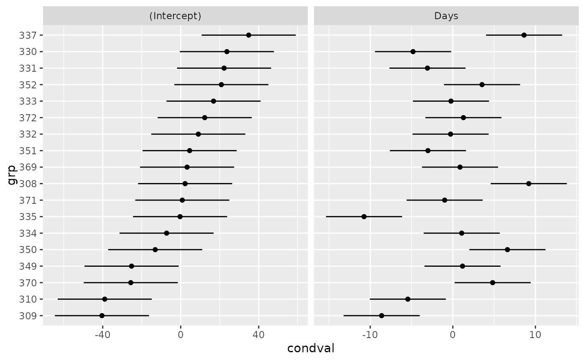

Extract the modes of the random effects
ranef.RdA generic function to extract the conditional modes of the random effects from a fitted model object. For linear mixed models the conditional modes of the random effects are also the conditional means.
Usage
# S3 method for class 'merMod'
ranef (object, condVar = TRUE,
drop = FALSE, whichel = names(ans), postVar = FALSE, ...)
# S3 method for class 'ranef.mer'
dotplot (x, data, main = TRUE, transf = I, level = 0.95, ...)
# S3 method for class 'ranef.mer'
qqmath (x, data, main = TRUE, level = 0.95, ...)
# S3 method for class 'ranef.mer'
as.data.frame (x, ...)Arguments
- object
an object of a class of fitted models with random effects, typically a
merModobject.- condVar
a logical argument indicating if the conditional variance-covariance matrices of the random effects should be added as an attribute.
- drop
should components of the return value that would be data frames with a single column, usually a column called ‘
(Intercept)’, be returned as named vectors instead?- whichel
character vector of names of grouping factors for which the random effects should be returned.
- postVar
a (deprecated) synonym for
condVar- x
a random-effects object (of class
ranef.mer) produced byranef- main
include a main title, indicating the grouping factor, on each sub-plot?
- transf
transformation for random effects: for example,
expfor plotting parameters from a (generalized) logistic regression on the odds rather than log-odds scale- data
This argument is required by the
dotplotandqqmathgeneric methods, but is not actually used.- level
confidence level for confidence intervals
- ...
some methods for these generic functions require additional arguments.
Value
From
ranef: An object of classranef.mercomposed of a list of data frames, one for each grouping factor for the random effects. The number of rows in the data frame is the number of levels of the grouping factor. The number of columns is the dimension of the random effect associated with each level of the factor. IfcondVarisTRUEeach of the data frames has an attribute called"postVar".If there is a single random-effects term for a given grouping factor, this attribute is a three-dimensional array with symmetric faces; each face contains the variance-covariance matrix for a particular level of the grouping factor.
If there is more than one random-effects term for a given grouping factor (e.g.
(1|f) + (0+x|f)), this attribute is a list of arrays as described above, one for each term.
condVarat some point in the future.) WhendropisTRUEany components that would be data frames of a single column are converted to named numeric vectors.From
as.data.frame: This function converts the random effects to a "long format" data frame with columns- grpvar
grouping variable
- term
random-effects term, e.g. “(Intercept)” or “Days”
- grp
level of the grouping variable (e.g., which Subject)
- condval
value of the conditional mean
- condsd
conditional standard deviation
Details
If grouping factor i has k levels and j random effects
per level the ith component of the list returned by
ranef is a data frame with k rows and j columns.
If condVar is TRUE the "postVar"
attribute is an array of dimension j by j by k (or a list
of such arrays). The kth
face of this array is a positive definite symmetric j by
j matrix. If there is only one grouping factor in the
model the variance-covariance matrix for the entire
random effects vector, conditional on the estimates of
the model parameters and on the data, will be block
diagonal; this j by j matrix is the kth diagonal
block. With multiple grouping factors the faces of the
"postVar" attributes are still the diagonal blocks
of this conditional variance-covariance matrix but the
matrix itself is no longer block diagonal.
Note
To produce a (list of) “caterpillar plots” of the random
effects apply dotplot to
the result of a call to ranef with condVar =
TRUE; qqmath will generate
a list of Q-Q plots.
Examples
library(lattice) ## for dotplot, qqmath
fm1 <- lmer(Reaction ~ Days + (Days|Subject), sleepstudy)
fm2 <- lmer(Reaction ~ Days + (1|Subject) + (0+Days|Subject), sleepstudy)
fm3 <- lmer(diameter ~ (1|plate) + (1|sample), Penicillin)
ranef(fm1)
#> $Subject
#> (Intercept) Days
#> 308 2.2585509 9.1989758
#> 309 -40.3987381 -8.6196806
#> 310 -38.9604090 -5.4488565
#> 330 23.6906196 -4.8143503
#> 331 22.2603126 -3.0699116
#> 332 9.0395679 -0.2721770
#> 333 16.8405086 -0.2236361
#> 334 -7.2326151 1.0745816
#> 335 -0.3336684 -10.7521652
#> 337 34.8904868 8.6282652
#> 349 -25.2102286 1.1734322
#> 350 -13.0700342 6.6142178
#> 351 4.5778642 -3.0152621
#> 352 20.8636782 3.5360011
#> 369 3.2754656 0.8722149
#> 370 -25.6129993 4.8224850
#> 371 0.8070461 -0.9881562
#> 372 12.3145921 1.2840221
#>
#> with conditional variances for “Subject”
str(rr1 <- ranef(fm1))
#> List of 1
#> $ Subject:'data.frame': 18 obs. of 2 variables:
#> ..$ (Intercept): num [1:18] 2.26 -40.4 -38.96 23.69 22.26 ...
#> ..$ Days : num [1:18] 9.2 -8.62 -5.45 -4.81 -3.07 ...
#> ..- attr(*, "postVar")= num [1:2, 1:2, 1:18] 145.71 -21.44 -21.44 5.31 145.71 ...
#> - attr(*, "class")= chr "ranef.mer"
dotplot(rr1) ## default
#> $Subject

#>
qqmath(rr1)
#> $Subject

#>
## specify free scales in order to make Day effects more visible
dotplot(rr1,scales = list(x = list(relation = 'free')))[["Subject"]]

## plot options: ... can specify appearance of vertical lines with
## lty.v, col.line.v, lwd.v, etc..
dotplot(rr1, lty = 3, lty.v = 2, col.line.v = "purple",
col = "red", col.line.h = "gray")
#> $Subject

#>
ranef(fm2)
#> $Subject
#> (Intercept) Days
#> 308 1.5126648 9.3234970
#> 309 -40.3738728 -8.5991757
#> 310 -39.1810279 -5.3877944
#> 330 24.5189244 -4.9686503
#> 331 22.9144470 -3.1939378
#> 332 9.2219759 -0.3084939
#> 333 17.1561243 -0.2872078
#> 334 -7.4517382 1.1159911
#> 335 0.5787623 -10.9059754
#> 337 34.7679030 8.6276228
#> 349 -25.7543312 1.2806892
#> 350 -13.8650598 6.7564064
#> 351 4.9159912 -3.0751356
#> 352 20.9290332 3.5122123
#> 369 3.2586448 0.8730514
#> 370 -26.4758468 4.9837910
#> 371 0.9056510 -1.0052938
#> 372 12.4217547 1.2584037
#>
#> with conditional variances for “Subject”
op <- options(digits = 4)
ranef(fm3, drop = TRUE)
#> $plate
#> a b c d e f g h
#> 0.80455 0.80455 0.18167 0.33739 0.02595 -0.44120 -1.37552 0.80455
#> i j k l m n o p
#> -0.75264 -0.75264 0.96027 0.49311 1.42742 0.49311 0.96027 0.02595
#> q r s t u v w x
#> -0.28548 -0.28548 -1.37552 0.96027 -0.90836 -0.28548 -0.59692 -1.21980
#> attr(,"postVar")
#> [1] 0.07364 0.07364 0.07364 0.07364 0.07364 0.07364 0.07364 0.07364 0.07364
#> [10] 0.07364 0.07364 0.07364 0.07364 0.07364 0.07364 0.07364 0.07364 0.07364
#> [19] 0.07364 0.07364 0.07364 0.07364 0.07364 0.07364
#>
#> $sample
#> A B C D E F
#> 2.18706 -1.01048 1.93790 -0.09689 -0.01384 -3.00374
#> attr(,"postVar")
#> [1] 0.04087 0.04087 0.04087 0.04087 0.04087 0.04087
#>
#> with conditional variances for “plate” “sample”
options(op)
## as.data.frame() provides RE's and conditional standard deviations:
str(dd <- as.data.frame(rr1))
#> 'data.frame': 36 obs. of 5 variables:
#> $ grpvar : chr "Subject" "Subject" "Subject" "Subject" ...
#> $ term : Factor w/ 2 levels "(Intercept)",..: 1 1 1 1 1 1 1 1 1 1 ...
#> $ grp : Factor w/ 18 levels "309","310","370",..: 9 1 2 17 16 12 14 6 7 18 ...
#> $ condval: num 2.26 -40.4 -38.96 23.69 22.26 ...
#> $ condsd : num 12.1 12.1 12.1 12.1 12.1 ...
if (require(ggplot2)) {
ggplot(dd, aes(y=grp,x=condval)) +
geom_point() + facet_wrap(~term,scales="free_x") +
geom_errorbarh(aes(xmin=condval -2*condsd,
xmax=condval +2*condsd), height=0)
}
#> Loading required package: ggplot2
